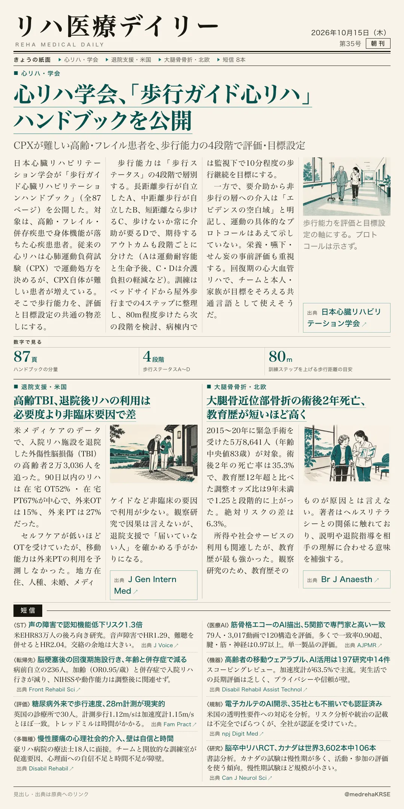
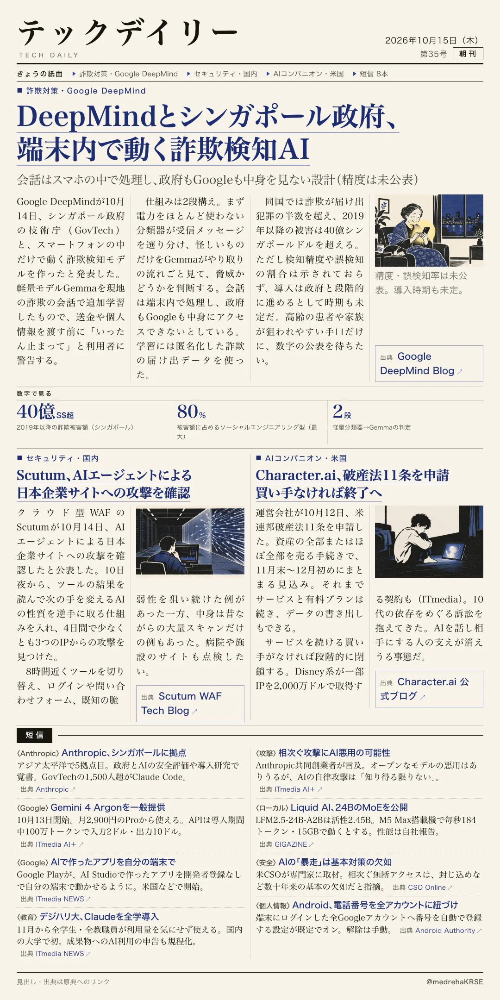

リハ医療デイリー
心リハ学会、「歩行ガイド心リハ」 ハンドブックを公開
CPXが難しい高齢・フレイル患者を、歩行能力の4段階で評価・目標設定
日本心臓リハビリテーション学会が、歩行能力を軸にした心リハの実践書を公開した。

テックデイリー
DeepMindとシンガポール政府、端末内で動く詐欺検知AI
会話はスマホの中で処理し、政府もGoogleも中身を見ない設計（精度は未公表）
詐欺対策にAIを使うとき、会話を誰が見るかという問題への一つの答え。
